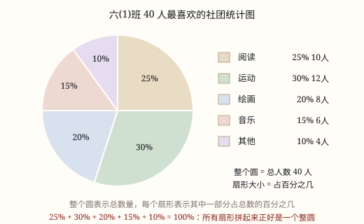

扇形统计图与统计图的选择
用整个圆表示总数、用扇形表示各部分占总数的百分比；它只看得出占比，看不出具体数量，要算人数还得乘总数。
| 所属主题 | 统计图 |
|---|---|
| 所属模块 | 统计与概率 |
| 课标学段 | 第三学段（5~6年级） |
| 前置知识 | 条形统计图与折线统计图 |
| 核心素养 | 数据意识应用意识推理意识 |
教材定位
人民教育出版社《2024年版》
对应六下第 2 单元「扇形统计图」：扇形统计图与百分数的意义。；横跨四上第 6 单元「条形统计图」与六下第 2 单元「扇形统计图」：怎样选择合适的统计图。条形图与折线图在四上、四下学，扇形图要到六下才学，本篇把三种图放在一起对照，是站在全程回头看的那种比较。
课标要求
| 统计与概率·数据的收集、整理与表达 | 认识折线统计图、扇形统计图；会用条形统计图、折线统计图呈现相关数据，解释所表达的意义。 印刷第 39 页 行为动词：掌握 |
|---|---|
| 统计与概率·数据的收集、整理与表达 | 能从各种媒体中获得所需要的数据，读懂其中的简单统计图表（例44）。 印刷第 39 页 行为动词：了解 |
| 统计与概率·数据的收集、整理与表达 | 能在简单的实际情境中，合理应用统计图表和平均数（例41），形成初步的数据意识和应用意识。 印刷第 38 页 行为动词：运用 |
说明
六年级同学做了一次「最喜欢的课外活动」调查，全班 40 人的结果是：球类 16 人、绘画 10 人、乐器 8 人、其他 6 人。要把这个结果画成图，最合适的办法之一是扇形统计图。
扇形统计图的样子像一个切开的披萨：用整个圆表示总数（这里是全班 40 人），用圆里一个个扇形表示各部分占总数的百分比。球类 16 人，占 16 ÷ 40 = 40%，就画一个占整个圆四成的扇形；绘画 25%、乐器 20%、其他 15%，四个扇形正好拼满一圈。
怎么定扇形的大小？整个圆是 360^\circ，占 40% 的扇形，圆心角就是 360^\circ × 40% = 144^\circ。所有扇形的百分比加起来必须是 100%，圆心角加起来必须是 360^\circ——因为拼起来正好是一整个圆，多一点也不行，少一点也不行。
扇形统计图最大的特点，也是最大的坑：它只告诉你「占多少」，不告诉你「有多少」。 看到球类 40%，你知道它在全班里占四成，但不知道具体是 16 人还是 160 人——除非你还知道总数是多少。这是它和条形统计图最根本的区别。
三种统计图各有分工：条形统计图看「多少」，谁多谁少一眼分明；折线统计图看「变化」，是涨是跌、趋势如何；扇形统计图看「占比」，各部分在整体里占几成。想说明什么，就选什么图。
（统计图的选择）
班委想向校长申请在教学楼加两台直饮水机。拿什么去说服他？如果画「每层楼有多少人」，校长看到的是「三楼人最多」；如果画「一天里各时段接水的人数」，校长看到的是「午休 20 分钟挤了 300 人次」。同样的事实，前一张图支持「调楼层」，后一张图支持「加机器」。选图不是审美问题，是「你想让对方看见什么」的问题。
三种图各有分工。条形统计图用直条的长短比多少：谁多、谁少、差多少，一眼分明。折线统计图用点的位置和线的起伏看变化：涨还是跌、哪一段最快、总体什么趋势。扇形统计图用扇形的大小看占比：各部分占整体的几成（六年级下册才正式学，这里先认个脸）。
正确的顺序是：先写一句结论，再选图。 这句话里出现「最多、最少、相差」——用条形图；出现「越来越、上升到、下降到、趋势」——用折线图；出现「占几成、一半、大部分」——用扇形图。写不出这句结论，说明还没想清楚要表达什么，画什么图都是碰运气。
最要紧的一条：同一组数据，换一种画法，读者会得出不同的结论。 图 1 里四个季度的借书量是 96、98、97、99 本。左边用条形图、纵轴从 0 到 100，四根柱子几乎一样高，读者会说「基本持平」；右边用折线图、纵轴只画 95 到 100，四个点被拉开，读者会说「忽上忽下、像大涨大跌」。数据一个没改，说法完全相反。
所以读别人给的图，第一件事不是看图，是看轴：纵轴从哪里开始？一格代表多少？横轴是不是等距？这三问能拆掉大部分「视觉魔术」。
几种常见的搭配也值得记住：表格给准确值，图给整体印象；条形图配扇形图，一个看绝对量、一个看占比；折线图配一张小表，趋势之外还能查到每月具体多少。
使用场景
校园生活：班级兴趣调查、午餐食谱的营养构成、同学上学方式的统计，用扇形图看各类占几成最直观。
购物消费：家庭一个月的支出构成（餐饮、房租、交通、其他各占多少），扇形图一看就知道钱主要花在哪一块。
自然现象：一天产生垃圾的分类构成（厨余、可回收、有害、其他），或者一个地区土地利用类型的占比。
农业生产：一片果园里苹果、梨、桃各种果树的种植面积占比，或者饲料配方里各种原料的比例。
计量与估算：饮料包装上标注的营养成分占比（蛋白质、脂肪、碳水化合物），也是扇形图的常见用法。
（统计图的选择）
校园生活：向校长申请饮水机、向班主任说明近视人数变化、给社团招新做宣传——每件事要的图都不一样。
购物消费：小店看四种商品的销售额占比决定进什么货；看一年的月销量决定什么时候备货。
自然现象：小区垃圾分类各类的重量比较（条形），或者一年里每月用电量的起伏（折线）。
行程出行：共享单车一年的骑行量看季节规律；几个站点的骑行量比较看该往哪调车。
计量与估算：体检数据里，各项指标与标准范围的对比用条形，逐年的身高体重变化用折线。
注意点
看到百分比别当成人数。图上的 40% 说的是「占四成」，不是 40 人。想知道人数，必须用「总数 × 百分比」。
百分比加起来必须是 100%。算出来是 105%，说明数据抄错了或者某一部分被重复统计，要回去核对。
扇形大的不一定数量多。六(1)班 45 人里 40% 是 18 人，六(2)班 50 人里 30% 是 15 人——比较两个班时，扇形大小不能直接换成人数多少，要看各自的总数。
别用扇形图看变化。「这学期比上学期多了」这种趋势，要用折线统计图；扇形图只反映某一个时刻的构成。
画扇形要按圆心角来，用 360^\circ × 百分比算出角度，量角器量准，几个扇形拼起来要正好是一整圈。
（统计图的选择）
先定结论句，再动手画。没有结论句的图，通常什么也没说清。
读图先看轴：起点、一格代表多少、间隔是否相等，比图形本身更重要。
没有先后顺序的类别别连折线。四个班、四种水果，用条形图。
两组总量不同，别比扇形。占比大不代表人数多。
一张图只讲一件事。又想比多少、又想看变化、又想看占比，最后什么也没讲透。

图 1：整个圆是 40 人，扇形只告诉你「占几分之几」

图 1：数据一个没改，只是换了图、换了纵轴起点，结论就从「基本持平」变成「增长明显」
为什么是这样
算理推导
为什么用圆来表示总数：圆是一个完整的整体，没有起点也没有终点，最适合表示「一整块」。把总数想成这一整张圆饼，切下来的每一块就是其中的一部分。
为什么扇形的大小能表示占比：整个圆是 360^\circ，占一半就是 180^\circ，占四分之一就是 90^\circ，占 1% 就是 3.6^\circ。百分比和圆心角一一对应，所以扇形张开的角越大，这部分占的比例就越大，眼睛一看就有数。
为什么看不出具体数量：扇形记录的信息只有「这一块是整张饼的几分之几」。同样是「四成」，可以是 40 人里的 16 人，也可以是 400 人里的 160 人——两张扇形图长得一模一样。圆画多大是作图时定的，跟总数多少没有关系。
所以要得到具体数量，得走另一条路：部分 = 整体 × 百分率。知道全班 40 人、球类占 40%，就能算出 40 × 40% = 16 人。扇形图给比例，总数给基数，两者相乘才是数量。
反过来看，条形图和扇形图配合最好用：条形图告诉你各类各有多少人，扇形图告诉你它们在整体里占几成，一个看绝对量，一个看相对量，合起来才完整。
（统计图的选择）
三种图用的「视觉通道」不一样：条形图用长度，折线图用位置和斜率，扇形图用角度和面积。人对长度的判断最准，角度次之，面积最不准。所以能用长度说清的，就别用面积。
长度只能表达「多少」，表达不了「先后」；位置可以按顺序排开，还能连出路径，所以「变化」交给折线。角度必须依附一个整体（一整圈），所以「占比」交给扇形。
结论不同，不是图在骗人，而是每种图都在筛选信息：条形图把时间顺序抹掉了，折线图把「与总数的关系」抹掉了，扇形图把「具体有多少」抹掉了。选图，就是选你要强调什么、忽略什么。
再叠上刻度的手段，同一批数据能被说成「持平」也能被说成「暴涨」（图 1）。左图纵轴 0 到 100，96 和 99 的差别只占很小一段；右图纵轴 95 到 100，同样的差别撑满了整张图。轴的范围，就是放大镜的倍数。
动手实验
用一张圆形纸和一把量角器做一次真统计。先记录本班 40 人上学的主要方式（步行、公交、家长开车、骑车），算出各占百分之几；再用 360^\circ × 百分比算出每个扇形的圆心角；从圆心开始，用量角器依次画出这几个角，沿线剪开。最后把几块拼回一个圆——应该正好拼满，一圈不差。这就是「百分比加起来必须是 100%」的道理。再用同样的办法统计全校 400 人的上学方式，你会发现两张扇形图几乎一模一样，可人数差了 10 倍——扇形图确实不告诉你具体有多少人。 （统计图的选择） 拿本班四次数学测验的平均分 88、90、89、92，画三张图：一、纵轴 0 到 100 的条形图；二、纵轴 85 到 95 的条形图；三、折线图。给每张图配一句话，再把三张图分别给三位同学看，问同一句「你觉得我们班数学在进步吗」。你会发现三句话差得很远——数据是同一份，说法是三套。
按场景的例题
例 1（场景：校园生活） 读班级兴趣调查的扇形图
六(1)班 40 人的兴趣调查画成了扇形统计图：球类 40%、绘画 25%、乐器 20%、其他 15%。喜欢球类和绘画的各有多少人？
解：球类 40 × 40% = 16 人；绘画 40 × 25% = 10 人。检验：16 + 10 + 8 + 6 = 40 人，正好是全班人数。
答：球类 16 人，绘画 10 人。
例 2（场景：购物消费） 看家庭月支出构成
小宇家一个月支出 6000 元，扇形图显示：餐饮 35%、房租 30%、交通 15%、其他 20%。餐饮和房租各花多少元？
解：餐饮 6000 × 35% = 2100 元；房租 6000 × 30% = 1800 元。
答：餐饮 2100 元，房租 1800 元。
例 3（场景：计量与估算） 小区一天的垃圾分类
某小区一天产生垃圾 20 千克，扇形图显示厨余垃圾 55%、可回收物 25%、其他垃圾 20%。厨余垃圾有多少千克？如果每千克厨余垃圾能堆肥 0.3 千克，能堆出多少千克肥料？
解：厨余垃圾 20 × 55% = 11 千克；肥料 11 × 0.3 = 3.3 千克。
答：厨余垃圾 11 千克，能堆肥 3.3 千克。
例 4（场景：上学日常） 两张长得一样的扇形图
全校 400 人的上学方式扇形图里，步行占 40%；六(1)班 40 人的扇形图里，步行也占 40%。两处「步行 40%」各是多少人？能得出什么结论？
解：全校 400 × 40% = 160 人；六(1)班 40 × 40% = 16 人。
答：分别是 160 人和 16 人。百分比相同不代表人数相同，扇形图必须配合总数才能算出人数。
例 5（场景：农业生产） 申请加装饮水机
调查到一天四个时段的接水人次：7:30 有 40 人次、10:00 有 60 人次、12:00 有 300 人次、15:00 有 90 人次。要说服校长「午休太挤，需要加机器」，该用哪种图？为什么？
解：四个时段有先后顺序，要表达的是「某个时段特别挤」，用折线统计图：横轴按时段排开，12:00 那一点会高高凸起，形成明显的尖峰。如果用条形图，也能看出 12:00 最长，但「一天里的高峰」这层意思不如图上那个尖峰来得直接。
答：用折线统计图，横轴是时段、纵轴是人次，让 12:00 的尖峰自己说话。
例 6（场景：自然现象） 小店四种文具的销售额
文具店一个月卖出笔记本 45%、铅笔 20%、橡皮 15%、其他 20%（按金额算）。老板想知道「钱主要靠哪一类赚来的」，该用哪种图？
解：问的是「各部分占整体的几成」，四类合起来正好是整个月的营业额，用扇形统计图：45% 那一块接近半个圆，一眼看出笔记本是主力。
答：用扇形统计图。若还想知道各卖了多少钱，得再补上总额，用「总额 × 百分比」算出来。
例 7（场景：物流运输） 小区垃圾分类的四类重量
某小区一天产生垃圾：厨余 9.5 千克、可回收物 3 千克、有害垃圾 0.5 千克、其他垃圾 7 千克。要说明「厨余最多、有害最少」，该用哪种图？
解：问的是四类之间谁多谁少、差多少，类别之间没有先后顺序，用条形统计图：四根直条一摆，9.5 和 0.5 的差距非常直观。
答：用条形统计图。也可以用扇形图看「厨余占了将近一半」，但那样就看不出各有几千克了。
例 8（场景：行程出行） 共享单车一年的骑行量
某站点一年四个代表月份的骑行量：1 月 1200 次、4 月 2400 次、7 月 3800 次、10 月 2600 次、12 月 900 次。要说明「夏天骑得多、冬天骑得少」，该用哪种图？
解：月份有先后顺序，要表达的是随季节起伏，用折线统计图：线在 7 月冲到最高，到 12 月落到最低，起伏的形状就是季节规律。
答：用折线统计图。横轴按月份等距排开，纵轴从 0 开始，起伏才不会被放大。
常用推论
部分 = 整体 × 百分率；百分率 = 部分 ÷ 整体，用扇形图求人数就靠这一条。
扇形统计图中各部分百分率之和是 100%，对应的圆心角之和是 360^\circ。
同一个百分比放在不同总数的整体里，代表的数量不同：整体越大，同一百分比对应的数量越大。
比较具体数量用条形统计图，看增减变化用折线统计图，看部分与整体的关系用扇形统计图。
结论里要讲「谁多谁少、相差多少」，用条形统计图；讲「上升下降、趋势」，用折线统计图；讲「占几成」，用扇形统计图。
读图三步：看标题、看两个轴（起点与一格代表多少）、再看图形；顺序颠倒容易被图带走。
同一组数据可以画出结论相反的图，纵轴起点是最常见的「放大器」。
折线图要求横轴有序且等距；扇形图要求各组总量相同，占比才能直接比。
统计表给准确值，统计图给整体印象，两者常常配合使用。
易错点
错扇形图上球类占 40%，就说「喜欢球类的有 40 人」。
为什么错40% 是占比，不是人数。占比要乘总数才能变成人数。
正确全班 40 人时，40 × 40% = 16 人。
错六(2)班阅读占 45%，六(1)班阅读占 50%，所以六(2)班喜欢阅读的人少。
为什么错两个班的总人数不一定相同。占比大只说明在本班内部占的份额大，人数还要乘各自的总数。
正确先问清两个班各有多少人，再分别用「总数 × 百分比」算出人数来比。
错算出四个百分比是 30%、25%、30%、20%，加起来 105%，照样画图。
为什么错扇形要拼满一整圈，合计必须是 100%。多出 5% 说明数据重复统计或抄错了。
正确回去核对原始人数，重新算一遍百分比，确认合计 100% 再画。
错用扇形统计图说明「这学期参加社团的人数比上学期多了」。
为什么错扇形图只描述某一时刻各部分的构成，看不出时间上的增减变化。
正确改用折线统计图来比较两个学期的人数变化。
错用条形图说明「这几年参加社团的人数一年比一年多」。
为什么错条形图的各类是并列的，时间顺序在图上看不出来。四根柱子并排站着，谁在前谁在后，读者无从知道。
正确要看逐年变化，改用折线统计图，横轴按年份排开；只想比某一年各类多少，才用条形图。
错同一组数据（96、98、97、99），一边用纵轴 0—100 的条形图说「基本持平」，一边用纵轴 95—100 的折线图说「大幅增长」，两张都拿去做汇报。
为什么错数据没变，变的是图的类型和纵轴范围。左图里 3 本的差距只占整根柱子的很小一段；右图里同样的差距撑满了整张图。两个结论都「有图为据」，但只有一个诚实。
正确比较差异时纵轴从 0 开始；确实需要放大细微差别，就在图上明确标出「纵轴从 95 开始」，并说明差距的实际大小。
错把苹果、香蕉、梨、葡萄的销量连成折线，报告里写「销量呈上升趋势」。
为什么错这四类之间没有先后顺序，连线凭空造出一个「过程」，读者会把并列的四项误读成时间上的变化。
正确并列的类别用条形图；只有横轴是有先后的量（时间、次数、年级），才连折线。
错六(1)班阅读占 50%，六(2)班阅读占 45%，就说六(2)班喜欢阅读的人少。
为什么错两个班的总人数不一定相同，占比不能直接换成人数来比。
正确先问清两个班各有多少人，再用「总数 × 百分比」算出人数，然后比人数。
直观理解
扇形统计图像一块被切开的披萨：整张饼是全班，切给你的那一块占四分之一，你就知道自己分到了四分之一——可如果你不知道这张饼是 8 寸还是 16 寸，你根本不知道自己吃到了多少。占比是「切了几刀里的几刀」，数量还得看饼有多大。 （统计图的选择） 三种统计图就像三把工具：尺子量长短（条形），心电图看起伏（折线），切蛋糕看份额（扇形）。拿尺子去量心跳，不是尺子坏了，是用错了工具。汇报之前先问一句「我想让对方看见什么」，工具自然就选出来了。
整圆表示总数，扇形只讲占比；要问具体多少人，总数乘上百分率。 （统计图的选择） 比多少，看条形；看变化，走折线；问占比，切圆饼。先说结论再选图，读图先看轴起点。